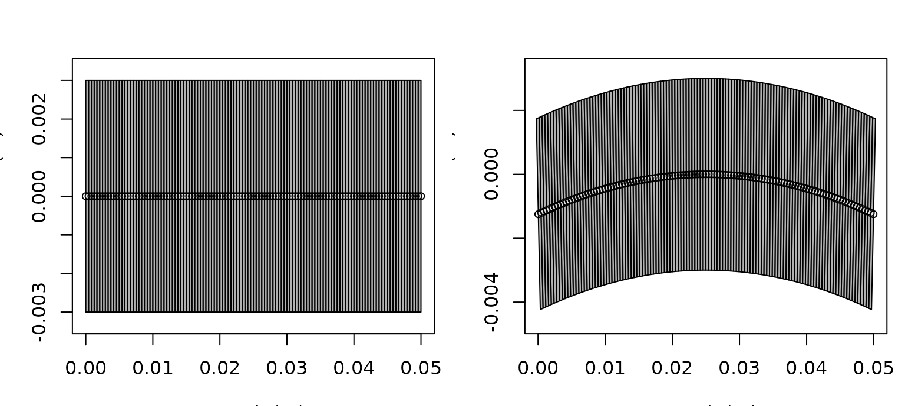

Shape Manipulation and Reforging
Source:vignettes/shape-manipulation-reforging/shape-manipulation-reforging.Rmd
shape-manipulation-reforging.RmdIntroduction
Shape manipulation matters because many published target representations are built from segmented or reformatted coordinate sets rather than from canonical closed forms (clay_horne_1994?; gastauer_australianantarcticdivisionzooscatr_2019?).
Real workflows often begin with a target description that is close to useful but not quite in the form required for the next model or comparison step. The package includes tools for reshaping, bending, or otherwise transforming existing objects rather than rebuilding them from scratch.

These tools are not cosmetic. They are part of the modeling layer because curvature, segmentation, and relative body-swimbladder scaling can all change the resulting backscatter in physically meaningful ways.
That is the key idea behind this vignette. Shape manipulation is not only about producing a different outline. It is about deciding how a target should be represented for a specific scientific or modeling question. A bent body, an inflated swimbladder, or a resampled segmentation may all be legitimate transformations, but each of them changes what the object means physically.
Main ideas
This part of the package is centered on utilities such as
brake() and reforge(). Conceptually, these
tools let the user keep the same target identity while changing
representation, curvature, or model-facing structure.
The scratch notes make the distinction especially clear:
-
brake()changes curvature while preserving the target identity, -
reforge()changes scaling, target dimensions, or resolution of an existing representation.
The practical distinction is simple:
Quick reshaping examples
It helps to see the two workflows immediately in code before discussing the details.
library(acousticTS)
data(krill, package = "acousticTS")
krill_40mm <- reforge(krill, body_target = c(length = 0.04))
krill_fine <- reforge(krill, n_segments_body = 200)
data.frame(
object = c("original", "krill_40mm", "krill_fine"),
length_m = c(
extract(krill, c("shape_parameters", "length")),
extract(krill_40mm, c("shape_parameters", "length")),
extract(krill_fine, c("shape_parameters", "length"))
),
n_segments = c(
extract(krill, c("shape_parameters", "n_segments")),
extract(krill_40mm, c("shape_parameters", "n_segments")),
extract(krill_fine, c("shape_parameters", "n_segments"))
)
)## object length_m n_segments
## 1 original 0.0410898 14
## 2 krill_40mm 0.0400000 14
## 3 krill_fine 0.0410898 200That is the simplest reforge() pattern for a one-body
FLS object: reuse the same target and change the body
target dimensions or axial resolution explicitly without rebuilding it
from scratch.
Bending with brake()
brake() applies a smooth curvature transformation to an
existing body description. It can work on a body-style coordinate list
or on a full scatterer object, depending on the workflow.
The key arguments are:
-
radius_curvature, the amount of curvature, -
mode = "ratio", which interprets curvature relative to body length, -
mode = "measurement", which interprets curvature in physical units.
Ratio mode is often the more robust choice for comparative studies because it keeps curvature tied to target size. Measurement mode is more natural when curvature is known from direct observation.
This distinction matters because the same nominal curvature can mean very different things for differently sized targets. Ratio mode preserves geometric interpretation across a size series. Measurement mode preserves literal physical curvature. Neither is universally better, but they answer different questions and should not be treated as interchangeable.
For curved FLS objects, the stored body length is
treated as the bent centerline arc length rather than as the flattened
x-axis span. That matters for later workflows because
reforge() now uses that same curved centerline directly
when a bent FLS is resized. In other words, there is no
hidden straight surrogate being rebuilt behind the scenes. The existing
bent rpos is what gets rescaled.
shape_obj <- cylinder(
length_body = 0.05,
radius_body = 0.003,
n_segments = 120
)
obj <- fls_generate(
shape = shape_obj,
density_body = 1045,
sound_speed_body = 1520
)
bent_ratio <- brake(obj, radius_curvature = 5, mode = "ratio")
bent_measured <- brake(obj, radius_curvature = 0.35, mode = "measurement")
curvature_ratio <- function(x) {
value <- extract(x, "shape_parameters")$radius_curvature_ratio
if (is.null(value)) NA_real_ else value
}
data.frame(
object = c("original", "bent_ratio", "bent_measured"),
length_m = c(
extract(obj, c("shape_parameters", "length")),
extract(bent_ratio, c("shape_parameters", "length")),
extract(bent_measured, c("shape_parameters", "length"))
),
curvature_ratio = c(
curvature_ratio(obj),
curvature_ratio(bent_ratio),
curvature_ratio(bent_measured)
)
)## object length_m curvature_ratio
## 1 original 0.05000000 NA
## 2 bent_ratio 0.04999999 5
## 3 bent_measured 0.05000000 7Plotting the object before and after bending makes the transformation much easier to interpret.
old_par <- par(no.readonly = TRUE)
on.exit(par(old_par))
par(mfrow = c(1, 2), mar = c(3.2, 3.2, 2.6, 0.8))
plot(obj, type = "shape", main = "Original FLS cylinder")
plot(bent_ratio, type = "shape", main = "After brake(mode = \"ratio\")")
It is also helpful to inspect the stored position matrix directly.
For a straight cylinder the body centerline stays at z = 0,
while brake() shifts the centerline into a curved arc and
slightly adjusts the x positions accordingly.
body_before <- extract(obj, "body")$rpos
body_after <- extract(bent_ratio, "body")$rpos
stations <- unique(round(seq(1, ncol(body_before), length.out = 5)))
data.frame(
station = stations,
x_before = round(body_before["x", stations], 5),
z_before = round(body_before["z", stations], 5),
x_after = round(body_after["x", stations], 5),
z_after = round(body_after["z", stations], 5)
)## station x_before z_before x_after z_after
## 1 1 0.0500 0 0.04996 -0.00125
## 2 31 0.0375 0 0.03749 -0.00031
## 3 61 0.0250 0 0.02500 0.00000
## 4 91 0.0125 0 0.01251 -0.00031
## 5 121 0.0000 0 0.00004 -0.00125That check is worth doing because a mathematically valid transformation can still create a geometry that is too coarse for the intended model if the segmentation is sparse.
It is also worth checking because curvature can alter more than the silhouette. Depending on the downstream model, bending can change projected length, local orientation, and the phase relationships among different parts of the body. A curvature transformation is therefore best interpreted as a new geometric state of the same target, not just as a cosmetic deformation of a drawing.
That distinction becomes especially important when a bent object is
later resized. The example below shows that the requested
body_target["length"] is matched to the true bent
centerline length, while the projected x span stays
slightly shorter.
centerline_arc_length <- function(x) {
body <- extract(x, "body")
rpos <- body$rpos
sum(sqrt(diff(rpos["x", ])^2 + diff(rpos["z", ])^2))
}
bent_rescaled <- reforge(bent_ratio, body_target = c(length = 0.08))
body_bent_rescaled <- extract(bent_rescaled, "body")$rpos
data.frame(
metric = c(
"target_length_m",
"stored_shape_length_m",
"centerline_arc_length_m",
"projected_x_length_m"
),
value = c(
0.08,
extract(bent_rescaled, c("shape_parameters", "length")),
centerline_arc_length(bent_rescaled),
diff(range(body_bent_rescaled["x", ]))
)
)## metric value
## 1 target_length_m 0.08000000
## 2 stored_shape_length_m 0.08000000
## 3 centerline_arc_length_m 0.08000000
## 4 projected_x_length_m 0.07986674This is the behavior to expect for an already bent FLS:
resizing is arc-length aware. If the scientific question is instead
“what happens if a straight target of length L is bent
afterward?”, the safer workflow is still to reforge() the
straight object first and then apply brake().
Positioning and local profile edits
Not every geometry edit is about bending or global resizing. It is also useful to have small helpers for positioning, resampling, smoothing, or locally widening and pinching an existing profile.
translated_obj <- translate_shape(obj, x_offset = -0.025)
centered_obj <- reanchor_shape(obj, anchor = "center", at = 0)
data.frame(
object = c("original", "translated", "centered"),
x_min = c(
min(extract(obj, "body")$rpos["x", ]),
min(extract(translated_obj, "body")$rpos["x", ]),
min(extract(centered_obj, "body")$rpos["x", ])
),
x_max = c(
max(extract(obj, "body")$rpos["x", ]),
max(extract(translated_obj, "body")$rpos["x", ]),
max(extract(centered_obj, "body")$rpos["x", ])
)
)## object x_min x_max
## 1 original 0.000 0.050
## 2 translated -0.025 0.025
## 3 centered -0.025 0.025Those helpers are intentionally simple:
-
translate_shape()applies a direct offset, -
reanchor_shape()computes the required offset from a nose, center, or tail anchor.
There are also helpers for local edits to the stored profile:
obj_inflated <- inflate_shape(
obj,
x_range = c(0.015, 0.035),
scale = 1.35
)
obj_smoothed <- smooth_shape(obj_inflated, span = 7)
obj_dense <- resample_shape(obj_smoothed, n_segments = 120)
obj_flipped <- flip_shape(obj_inflated, axis = "x")
data.frame(
object = c("original", "inflated", "dense"),
shape_label = c(
extract(obj, c("shape_parameters", "shape")),
extract(obj_inflated, c("shape_parameters", "shape")),
extract(obj_dense, c("shape_parameters", "shape"))
),
n_segments = c(
extract(obj, c("shape_parameters", "n_segments")),
extract(obj_inflated, c("shape_parameters", "n_segments")),
extract(obj_dense, c("shape_parameters", "n_segments"))
)
)## object shape_label n_segments
## 1 original Cylinder 120
## 2 inflated Arbitrary 120
## 3 dense Arbitrary 120In that sequence:
-
inflate_shape()widens a selected axial region, -
smooth_shape()regularizes the resulting outline, -
resample_shape()changes the discretization density without rebuilding the object, -
flip_shape()reverses the stored axial profile while keeping the x grid intact.
These operations are helpful when the main question is geometric preprocessing rather than formal rescaling. They are especially useful for measured outlines that need light cleanup before canonicalization or model runs.
Re-parameterizing with reforge()
reforge() is a generic interface for reshaping or
resizing an existing object. The package currently supports both
one-body FLS workflows and more explicitly multi-component
classes such as SBF and BBF.
Its most important arguments are:
-
body_scaleandswimbladder_scalefor proportional resizing, -
body_targetandswimbladder_targetfor direct target dimensions, -
maintain_ratiofor preserving relative component proportions when appropriate, -
n_segments_bodyandn_segments_swimbladderfor resampling, -
swimbladder_inflation_factorfor controlled bladder-size changes.
There is a critical interpretation difference between scale arguments and target-dimension arguments. Scale arguments ask, “How much larger or smaller should this component become relative to its current state?” Target-dimension arguments ask, “What final dimensions should this component have?”
data(sardine, package = "acousticTS")
obj_scaled <- reforge(
sardine,
body_scale = c(length = 1.2),
swimbladder_scale = c(height = 0.8),
isometric_body = FALSE,
isometric_swimbladder = FALSE,
maintain_ratio = FALSE,
n_segments_body = 60,
n_segments_swimbladder = 40
)
obj_target <- reforge(
sardine,
body_target = c(length = 0.12),
swimbladder_target = c(length = 0.07, height = 0.0025),
isometric_swimbladder = FALSE,
maintain_ratio = FALSE
)## Warning: Swimbladder exceeds body bounds at some positions.
data.frame(
object = c("original", "obj_scaled", "obj_target"),
body_length_m = c(
extract(sardine, c("shape_parameters", "body", "length")),
extract(obj_scaled, c("shape_parameters", "body", "length")),
extract(obj_target, c("shape_parameters", "body", "length"))
),
bladder_length_m = c(
extract(sardine, c("shape_parameters", "bladder", "length")),
extract(obj_scaled, c("shape_parameters", "bladder", "length")),
extract(obj_target, c("shape_parameters", "bladder", "length"))
)
)## object body_length_m bladder_length_m
## 1 original 0.210 0.085
## 2 obj_scaled 0.252 0.085
## 3 obj_target 0.120 0.070The same idea applies when the body stays fixed but an internal component needs to move. For example, a swimbladder can be shifted fore-aft or dorsoventrally without rebuilding the entire object:
bladder_forward <- offset_component(
sardine,
component = "bladder",
x_offset = 0.002
)
data.frame(
object = c("original", "bladder_forward"),
bladder_x_min = c(
min(extract(sardine, "bladder")$rpos[1, ]),
min(extract(bladder_forward, "bladder")$rpos[1, ])
)
)## object bladder_x_min
## 1 original 0.065
## 2 bladder_forward 0.067The same interface also extends to newer multi-component classes such
as BBF, where the body and backbone can be reforged
separately:
bbf_rescaled <- reforge(
bbf_obj,
body_scale = c(length = 1.1),
backbone_scale = c(length = 1.1),
n_segments_body = 120,
n_segments_backbone = 60
)For reference, the scale-target patterns above can also be written more compactly as:
obj_scaled <- reforge(
obj_sbf,
body_scale = c(length = 1.2),
swimbladder_scale = c(height = 0.8),
n_segments_body = 60,
n_segments_swimbladder = 40
)
obj_target <- reforge(
obj_sbf,
body_target = c(length = 0.12),
swimbladder_target = c(length = 0.07, height = 0.0025),
maintain_ratio = FALSE
)Named vectors matter here. For anisotropic changes, dimensions should
be supplied using names such as length, width,
and height. That keeps the transformation explicit and
avoids accidental axis mismatches.
The deeper point is that reforge() often changes
representation more directly than brake(). Bending usually
preserves the same broad anatomical proportions while changing pose.
Reforging may change size, aspect ratio, internal proportions, and
numerical resolution all at once. That makes it especially powerful for
simulation and sensitivity studies, but it also means the transformed
object should be treated as a deliberate new parameterization rather
than as a trivial variant of the original.
For bent FLS objects, there is one more important
interpretation detail: body_target = c(length = ...) refers
to the new bent centerline arc length, not to the projected
x extent. For straight FLS objects those two
quantities are effectively the same, but once curvature has been
introduced they should not be treated as interchangeable.
Why this matters
These tools are especially useful when:
- an arbitrary measured geometry must be adapted for a model family,
- curvature or pose needs to be explored systematically,
- one object representation needs to be converted into another for comparison.
They are also useful when the scientific question itself is morphological. For example, one may want to ask whether target strength is more sensitive to curvature, overall length, or swimbladder inflation. Those are exactly the kinds of questions that reshaping utilities make tractable.
In that sense, these utilities are often not just preprocessing steps. They can be the mechanism by which the actual hypothesis is encoded. If a workflow is designed to ask what aspect of morphology matters most acoustically, then the transformation function is part of the experimental design.
Resolution and physicality checks
Two geometry checks are especially important after
brake() or reforge():
- whether the object still has adequate segment resolution for the intended model,
- whether the transformed swimbladder remains physically plausible inside the body.
The second point is particularly important for SBF
workflows. If the swimbladder is inflated or rescaled aggressively,
geometric containment can become questionable even before the code
throws a warning.
For that reason, a practical reshaping workflow is usually:
- transform the object,
- plot the transformed geometry,
- inspect component dimensions,
- then re-run
target_strength().
Choosing between brake() and
reforge()
Although both functions manipulate geometry, they answer different questions.
Use brake() when:
- the target identity should remain the same but posture changes,
- curvature is the parameter of interest,
- the original segmentation is already suitable.
Use reforge() when:
- component lengths or widths need to be rescaled,
- body and swimbladder proportions must be altered separately,
- segment counts must be regularized for downstream modeling,
- simulation workflows need dimension changes as explicit parameters.
If a simulation needs both curvature and resizing, it helps to decide
which quantity is supposed to stay physically meaningful. When the
object is already bent, reforge() preserves the bent state
and rescales that geometry directly. When the intended interpretation is
“start straight, resize, then bend,” that sequence should be built
explicitly in the workflow.
Recommended use
Geometry transformation is best treated as a modeling decision rather than a purely cosmetic step. Any reshaping or reforging should be interpreted in light of the model assumptions it is intended to support.
For brake(), the practical distinction is between
ratio-based curvature and curvature specified in measured units. For
reforge(), the practical distinction is between
proportional scaling and target-dimension-based resizing. Both are
useful, but they answer different modeling questions.
One useful habit is to preserve the original object and store transformed variants as separate named objects. That makes it easier to compare before/after model outputs without losing the original parameterization.
Another useful habit is to document what physical interpretation the transformation is meant to represent. A bent object may correspond to posture. A rescaled swimbladder may correspond to inflation state. A resampled geometry may correspond to numerical regularization rather than a biological change. Making that meaning explicit helps keep later comparisons scientifically interpretable instead of turning into an untracked series of geometric edits.